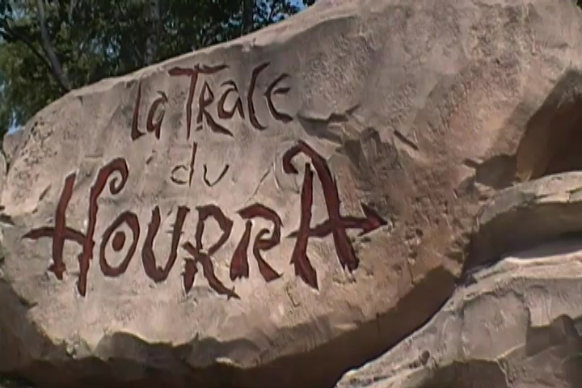

| |
Trace Du Hourra Review

Today at Parc Asterix, we're here to review Trace Du Hourra, the park's Bobsled coaster. Not only are these incredibly rare rides, but this is a rare coaster, even amongst all the Bobsled coasters. You see, this is a Bobsled, that unlike all the other bobsleds that have currently been built, is not themed to a Bobsled. This one is actually themed to the cavemen from the Asterix comics. You see, they were bored one day, and they decided to build a slide. And this coaster is the slide that we're about to ride. That's both really clever and unique. I can't say that I've ridden any coaster with a theme like this one. So I'm already impressed. We hop in the cars, pull down the lap bar, and we're off. We head around a turn and climb the lifthill. There's not much of a view other than the top of a bunch of trees, but we do notice something climbing the lifthill. This is very big. No really. We've been climbing for a while. Considering the size of this thing, it almost gives us a vibe of "OH SH*T!!!". This is going to be awesome. We crest the lifthill, go through a little straight track, and then head into a downward helix. YAY!! The snaking has begun!! We head down the first helix, and then head into an S Curve, giving us some nice swinging action as we head straight into the next helix. Hey, I'm always a big fan of swinging action. You know how much I like to swing. =) We then head down another helix. WEE!!! After that, we head up a small hill that takes away a lot of our speed and essentially acts as a midcourse brake. LAME!!! =( We then head around another turn before heading straight into the next downward helix. Hey, we're starting to get some of our speed back as we're now apparently close to the ground. Oh, and fun little fact. When on the ride, make sure to look for hats. Apparently this ride makes everyone lose their hats as I saw A TON of hats on the track. Good thing this ride isn't in America, otherwise we'd be seeing A TON of idiots walking on the track to get their hat and then get run over (I WISH this was just an ugly American Sterotype that wasn't true. Sadly, my days working in a theme park have proved that people are that stupid. I've seen people attempt to win Darwin Awards with my own eyes). We then head up another hill and into a mid course brakes. OH COME ON!!! WE JUST WENT THROUGH ONE!!! =( Anyways, we then head around a turn and actually go through an arch that's both really pretty and adds to the theming. Hey, this is awesome. TAKE THE ARCH!!! We then head down another helix. It may not give us a lot of speed and we may not be going fast, but hey. We get to TAKE THE ARCH AGAIN!!! Thank god this ride has all this incredible caveman theming. We then head through a couple more turns only to head straight into...ANOTHER BRAKE RUN!!! GOD DAMN IT!!!! NOT AGAIN!!!! And sadly, that's the end of the ride. So yeah. It may be a little short, I still really like this Bobsled. Not only do I just love all the theming that the ride has, but it's also the best of its kind, even without it. It's a big ride, and it definetly has the most swinging action of all the Bobsleds I've ridden. This is just one of those coasters that may not be intense at all, but it's just a ton of fun to ride. I'd definetly give it a ride while at Parc Asterix. You'll have a good time.
7/10
Location: Parc Asterix
Opened: 2001
Built by: Mack
Last Ridden: June 30, 2012
Trace Du Hourra Photos


Home
|